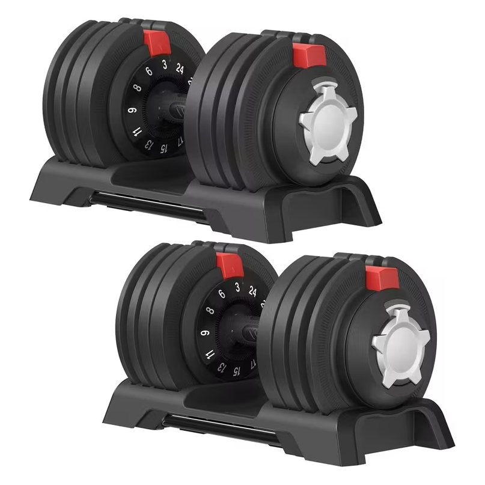
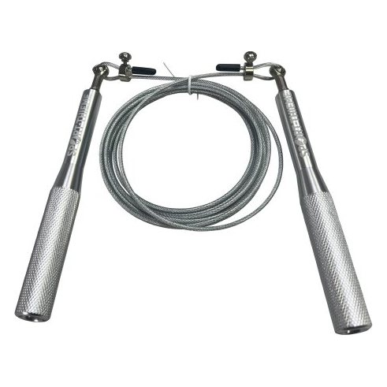
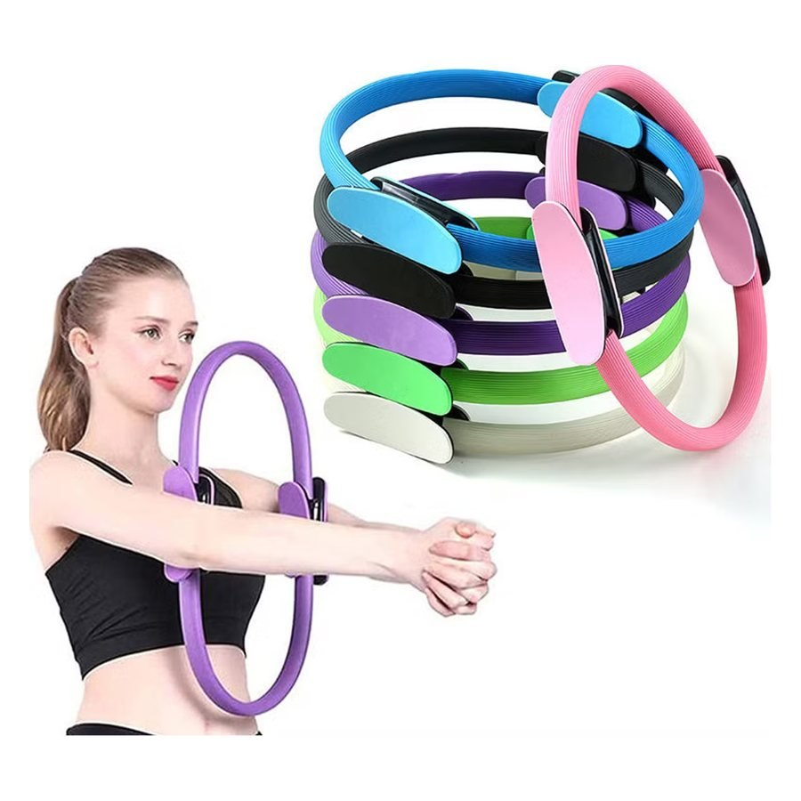
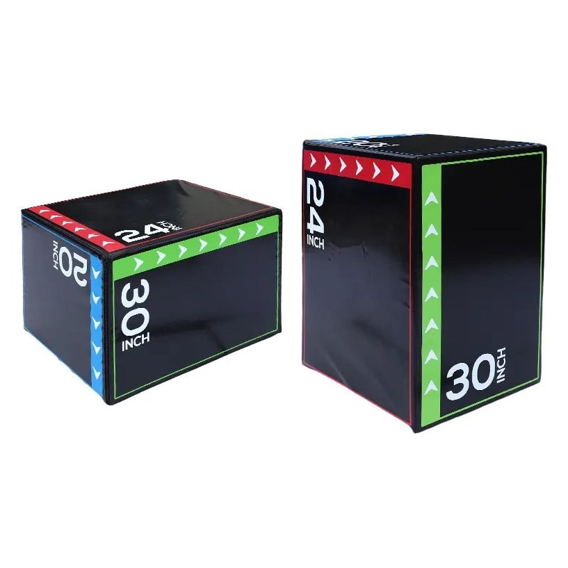

图片仅供参考，展示产品类型。
运动与健身
无刷筋膜枪 （LED显示, 可拆卸电池, 多种按摩头）
无刷冲击式筋膜枪，LED显示，可拆卸电池，配多种按摩头和礼盒。
无刷筋膜枪可在训练后或久坐后放松肌肉和筋膜。进入欧盟市场需关注电池运输测试（UN 38.3）、电池法规、ElektroG和GPSR；不得宣称治疗功效，否则适用医疗器械法规。
技术参数
| 电机 | 无刷，高扭矩 |
|---|---|
| 速度 | 4档恒速 + 3种自动模式 |
| 显示 | LED显示屏 |
| 输入电压 | 110–240 V |
| 海关编码（HS） | 90191010 |
欧盟标准与法规
EN 60335-2-32 / 2014/35/EU按摩器具安全（家用电器）及低电压指令2014/30/EU电磁兼容指令（EMC）2011/65/EURoHS：电气设备有害物质限制(EU) 2023/1542电池法规（+BattG）；电芯：IEC 62133-2，运输：UN 38.3ElektroG / WEEE在stiftung ear注册，回收义务(EU) 2023/988 + REACHGPSR及REACH附件XVII第50项（握把和外壳中的多环芳烃）
搭配产品

本类别其他产品

可折叠走步机 （0.8–8 km/h, 0.75 HP, 桌下跑步机）超薄可折叠走步机，适用于居家办公和客厅，配LED显示屏、APP连接和静音电机。

碳纤维板式网球拍 （EVA芯, 约360 g）

匹克球套装 （2支碳纤维球拍, 4个球）含两支碳纤维球拍（225 g）和四个球的匹克球套装，适合入门者、球会和零售商。

可调节哑铃一对 （旋钮系统, 最高2 × 24 kg）两支旋钮式哑铃，15档重量（2.5至24 kg）并配收纳底座，可替代整套哑铃。

弹力带套装 （乳胶带, 5档阻力, 引体向上辅助/环形带, 含门锚）从超轻到超重的天然乳胶弹力带，附门锚，适用于力量、灵活性和康复训练。

竞速跳绳，可调节 （铝合金手柄, PVC包覆钢丝绳, 约270厘米）

门框引体向上杆，免打孔 （钢制, 海绵/TPR握把）免打孔的钢制门框引体向上杆，是自重训练的经典入门器材。

普拉提圈 (约36厘米,泡沫手柄)带软垫手柄的普拉提阻力圈,用于腿部与核心训练。

战绳,15米/38毫米 (尼龙套,带手柄)用于功能性训练和HIIT的战绳。

跑步腰包 (防泼水,带手机袋)跑步时放手机、钥匙和卡片的轻薄腰包。

PU皮拳击手套,12盎司 (魔术贴)用于对练和沙袋的训练手套。

软体跳箱,泡沫,三合一用于增强式训练和踏板训练的软体跳箱。

EVA浮板游泳训练中练习腿部技术的浮板。

双杠臂屈伸架,钢制用于训练肱三头肌、胸部和核心的落地臂屈伸架。

按摩球套装 (曲棍球与花生球,EPP/硅胶)用于激痛点和背部放松的紧凑筋膜球。